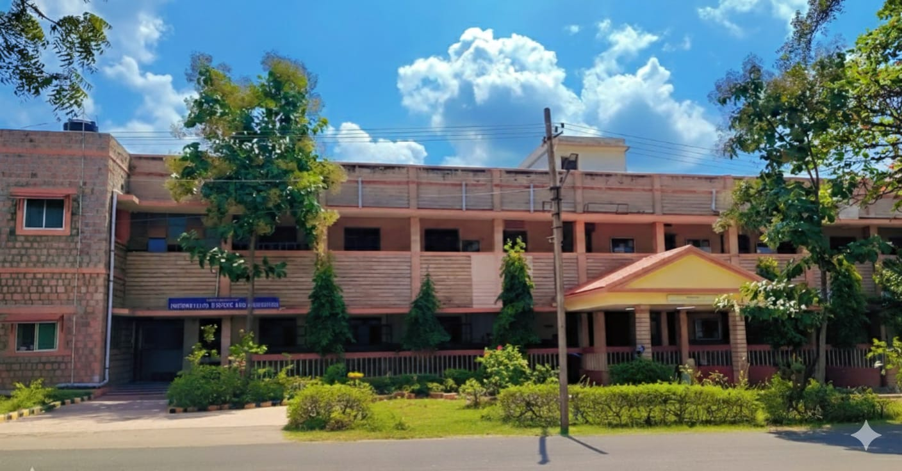

Welcome to the ISE department at Basaveshwar Engineering College. We focus on software development, data science, and modern computing.
| Sl.No | Name | Designation | Qualification | Specialization |
|---|---|---|---|---|
| 1 | Dr. S. R. Patil | Professor | Ph.D | Image Processing |
| 2 | Dr. S. P. Bangarshetti | Professor | Ph.D | Image Processing |
| 3 | Prof. P. V. Kulkarni | Associate Prof. | M.Tech | Database Systems |
| 4 | Prof. P. S. Puranik | Associate Prof. | M.Tech | Web Technology |
| 5 | Dr. L. B. Bhajantri | Associate Prof. | Ph.D | Wireless networks and communications |
| 6 | Prof. R. B. Math | Assistant Prof. | M.Tech | Quality management |
| 7 | Prof. V. S. Patil | Assistant Prof. | M.Tech | Image processing |
| 8 | Prof. S. N. Kugali | Assistant Prof. | M.Tech | Computer networks |
| 9 | Prof. S. M. Kulkarni | Assistant Prof. | M.Tech | Virtual Adhoc networks |
| 10 | Prof. G. M. Patil | Assistant Prof. | M.Tech | Networking |
| 11 | Prof. P. K. Deshapande | Assistant Prof. | M.Tech | Algorithms and databases |
| 12 | Prof. G. B. Shettar | Assistant Prof. | M.Tech | Software testing and Computer networks |
| 13 | Prof. D. I. Kalappanavar | Assistant Prof. | M.Tech | Networking |
| 14 | Prof. C. R. Shivanagi | Assistant Prof. | M.Tech | Image Processing |
| 15 | Prof. M. R. Patil | Assistant Prof. | M.Tech | Web Technology |
| 16 | S. S. Hiremath | Assistant Prof. | M.Tech | Wireless Sensor Networks, IoT |
| 17 | S. M. Pattanshetti | Assistant Prof. | M.Tech | Computer networks |
| 18 | P. R. Muttanavar | Assistant Prof. | M.Tech | Web technology |
| 19 | S. S. Guttannavar | Assistant Prof. | M.Tech | Computer Science |